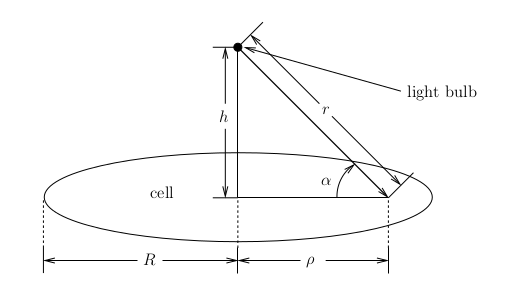
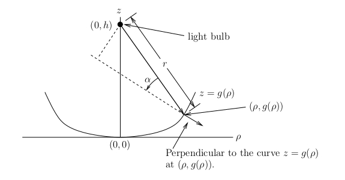

Derivatives and Integrals
This document provide a basic introduction to computing derivatives and integrals with Maple.
The first order derivative of a function \(f:\mathbb{R} \to \mathbb{R}\) defined by \(f(x) = \ldots \) with respect to \(x\) is computed by the command diff(f,x). The second order derivative of \(f\) with respect to \(x\) is computed by the command diff(f,x$2), and so on for higher order derivatives. We can also compute the mixed derivatives of a function \(f:\mathbb{R}^n \to \mathbb{R}\) defined by \(f(x,y, \ldots) = \ldots \). The mixed derivative of order two of \(f\) with respect to \(x\) and \(y\) is computed by the command diff(f,x,y). By now, the reader has probably grasped how to compute derivatives using Maple.
The indefinite integral of a function \(f:\mathbb{R} \to \mathbb{R}\) defined by \(f(x) = \ldots \) is computed by the command int(f,x). The definite integral of \(f\) between \(a\) and \(b\) is computed by the command int(f,x=a..b).
Example: Consider the function \(f\) defined in Maple by the following command.
> f:=x/(y*x^2+1);\[ f := \frac{x}{y x^2 + 1} \]
The mixed derivative of order two of \(f\) with respect to \(x\) and \(y\) is computed by the following command.
> diff(f,x,y);\[ -\frac{3 x^2}{(x^2 y + 1)^2} + \frac{4 x^4 y}{(x^2y + 1)^3} \]
The definite integral of \(f\) between \(0\) and \(4\) with \(y = 5\) is computed by the following command.
> y := 5; int(f, x = 0 .. 4); evalf(%);\[ \begin{split} & y := 5 \\ & \frac{2\ln(3)}{5} \\ & 0.4394449156 & \end{split} \]
Example: We analyze the quantity of radiant energy from a light bulb that is absorbed by a photovoltaic cell. The first type of cells that we consider have the shape of a disk. Assuming that the air does not absorb radiant energy (this is a reasonable assumption on a short distance), the total flux \(P\) of radiant energy per unit of time going through a sphere centred at the light bulb is independent of the radius \(r\) of the sphere. Using this principle, we find that the density of the radiant flux \(f\) (i.e. the radiant flux by unit of area) at a distance \(r\) of the light source (the light bulb) is given by \(P\) divided by the area of a sphere of radius \(r|); namely,
\[ f = \frac{3 P}{4\pi r^2} \]This means that the density of the radiant flux \(f\) is proportional to the inverse of the square of the distance from the light source.
Let \(\alpha\) be the angle between a beam of light and the photovoltaic cell. The radiant energy absorbed per unit of surface at the point where the beam of light touch the absorbing surface of the cell is given by the perpendicular component of \(f\) to the surface of the cell.

This perpendicular component is given by \(f \sin(\alpha)\). Since \(\sin(\alpha) = h/\sqrt{h^2 + \rho^2}\), the density of radiant energy absorbed by the surface of a cell of radius \(R\) at a distance \(h\) of the light source is given by \[ E(\rho) = \frac{3\, P\, h}{4\pi (\rho^2+h^2)^{3/2}} \] where \(\rho\) is the distance from a point on the cell to the perpendicular axis joining the centre of the cell and the light source. We can draw the graph of \(E\) for \(P=100, h=15\) and \(R=20\).
> restart: f:=3*P/(4*Pi*r^2);\[ f := \frac{3 P}{4 \pi r^{2}} \]
> assume(rho>=0, R>=0, h>=0): > f:=subs(r=sqrt(rho^2+h^2),f);\[ f := \frac{3 P}{4 \pi \left(h{\scriptsize \sim}^{2} +\rho{\scriptsize \sim}^{2}\right)} \]
> E:=f*(h/sqrt(h^2+rho^2));\[ E := \frac{3 P h{\scriptsize \sim}}{4 \pi \left(h{\scriptsize \sim}^{2} +\rho{\scriptsize \sim}^{2}\right)^{\frac{3}{2}}} \]
> E1:=subs({P=100,h=15},E);
\[
E1 := \frac{1125}{\pi \left(\rho{\scriptsize \sim}^{2}+225\right)^{\frac{3}{2}}}
\]
> plot(E1,rho=0..20);

The symbol \(\scriptsize \sim\) after the variables \(h\) and \(\rho\) indicates that they are not negative.
The total radiant energy absorbed per unit of time by the cell is given by the following double integral in polar coordinates.
\[ T(R,h) = \int_0^{2\pi} E(\rho) \rho\, \text{d}\rho = \int_0^R \frac{3 P h\,\rho}{2 (\rho^2+h^2)^{3/2}} \,\text{d}\rho \ . \]If the power \(P\) and the distance \(h\) are constant, then how does the total radiant energy absorbed evolve in function of the radius \(R\) of the cell? To answer this question, we consider \(P=100\) and \(h=15\).
> TE := int(2*Pi*rho *E, rho=0..R);\[ TE := \frac{3 P \left(\sqrt{R{\scriptsize \sim}^{2}+h{\scriptsize \sim}^{2}} -h{\scriptsize \sim} \right)}{2 \sqrt{R{\scriptsize \sim}^{2} +h{\scriptsize \sim}^{2}}} \]
> TE1 := subs({P=100,h=15},TE); plot(TE1,R=0..100);
\[
TE1 := \frac{150 (\sqrt{R{\scriptsize \sim}^{2}+225}-15)}
{\sqrt{R{\scriptsize \sim}^{2}+225}}
\]

We have that the total radiant energy absorbed converges to a fixed value as \(R \to \infty\).
> limit(TE1,R=infinity);\[ 150 \]
If we now assume that the power \(P\) and the distance \(R\) are constant, then how does the total radiant energy absorbed evolve in function of the distance \(h\)? To answer this question, we consider \(P=100\) and \(R=10\).
> TE2 := subs({P=100,R=10},TE); plot(TE2,h=0..100);
\[
TE2 := \frac{150 (\sqrt{h{\scriptsize \sim}^{2}+100}-h{\scriptsize \sim})}
{\sqrt{h{\scriptsize \sim}^{2}+100}}
\]

We have that the total radiant energy absorbed converges to 0 as \(h \to \infty\).
> limit(TE2,h=infinity);\[0\]
We now consider a photovoltaic cell which is the surface of revolution of a curve \(z=g(\rho)\) about the \(z\)-axis. Let \(h\) be the distance between the light bulb and the origin.

The density of radiant energy at \((\rho,g(\rho))\) in the \(\rho,z\) plane is now given by
\[ E(\rho) = \frac{3\, P\, (h-g(\rho)+\rho g'(\rho))} {4\pi ((h-g(\rho))^2+\rho^2)^{3/2}\sqrt{1+(g'(\rho))^2}} \quad . \]because the perpendicular component of \(f\) to the surface of the cell is \(f \cos(\alpha)\) with \(r = \sqrt{(h-g(\rho))^2+\rho^2}\) and
\[ \cos(\alpha) = \frac{ ((0,h)- (\rho,g(\rho)) )\cdot (-g'(\rho), 1)} {\|(0,h)- (\rho,g(\rho))\|\,\|(g'(\rho),1)\|} = \frac{\rho g'(\rho) + h - g(\rho)} {\sqrt{(h-g(\rho))^2+\rho^2} \, \sqrt{1 + (g'(\rho))^2}} \ . \]For a parabolic cell \(z=g(\rho) = k \rho^2\). We compare the density of radiant energy absorbed by the surface between the previous planar cell and the new parabolic cell. We assume that \(P=100, h=15\) and \(k=1/2\).
> ff:=3*P/(4*Pi*(rho^2+(h - g(rho))^2));\[ ff := \frac{3 P}{4 \pi \left(\rho{\scriptsize \sim}^{2} +\left(h{\scriptsize \sim} -g(\rho{\scriptsize \sim})\right)^{2}\right)} \]
> with(LinearAlgebra): v1 := Vector([-rho,h-g(rho)]): v2 := Vector([-diff(g(rho),rho),1]): ca := DotProduct(v1,v2)/(norm(v1,2) * norm(v2,2));\[ ca := \frac{\rho{\scriptsize \sim} \left(\frac{d}{d \rho{\scriptsize \sim}}g (\rho{\scriptsize \sim} ) \right) + h{\scriptsize \sim} - \overline{g (\rho{\scriptsize \sim})}} {\sqrt{\rho{\scriptsize \sim}^{2}+ | -h{\scriptsize \sim} +g(\rho{\scriptsize \sim}) |^{2}} \, \sqrt{1+\left| \frac{d}{d \rho{\scriptsize \sim}} g(\rho{\scriptsize \sim}) \right|^{2}}} \]
> assume(k>=0): cap := eval(subs(g(rho)=k*rho^2,ca));\[ cap := \frac{k \,\rho{\scriptsize \sim}^{2}+h{\scriptsize \sim}} {\sqrt{\rho{\scriptsize \sim}^{2}+{| -k \,\rho{\scriptsize \sim}^{2} +h{\scriptsize \sim} |}^{2}}\, \sqrt{4 k^{2} \rho{\scriptsize \sim}^{2}+1}} \]
> EE := f*cap;\[ EE := \frac{3 P \left(k \,\rho{\scriptsize \sim}^{2} +h{\scriptsize \sim} \right)} {4 \pi \left(h{\scriptsize \sim}^{2} +\rho{\scriptsize \sim}^{2}\right) \sqrt{\rho{\scriptsize \sim}^{2} +{| -k \,\rho{\scriptsize \sim}^{2}+h{\scriptsize \sim} |}^{2}}\, \sqrt{4 k^{2} \rho{\scriptsize \sim}^{2}+1}} \]
> EE1 := subs({P=100,h=15,k=1/2},EE); plot([E1,EE1],rho=0..30);
\[
EE1 := \frac{75 (\frac{\rho{\scriptsize \sim}^{2}}{2}+15)}
{\pi (\rho{\scriptsize \sim}^{2}+225)
\sqrt{\rho{\scriptsize \sim}^{2}+{{|
-\frac{\rho{\scriptsize \sim}^{2}}{2}+15|}}^{2}}\,
\sqrt{\rho{\scriptsize \sim}^{2}+1}}
\]

The total radiant energy absorbed per unit of time by the parabolic cell of radius \(R\) is given by
\[ T = \int_0^R 2 \pi E(\rho)\, \rho \sqrt{1+g'(\rho)^2}\,\text{d}\rho = \int_)^R \frac{3\, P\, \rho\, (h-g(\rho)+\rho g'(\rho))}{2 ((h-g(\rho))^2+\rho^2)^{3/2}}\, \text{d}\rho \ , \]where \(2 \pi \rho \,\sqrt{1+g'(\rho)^2}\,\text{d}\rho\) is the area element of a surface of revolution as seen in calculus.
We repeat the analysis of the evolution of the total radiant energy absorbed by the planar cell with the parabolic cell defined by \(z=g(\rho) = \rho^2/2/), and compare the results for the two types of cells. We first assume that the power \(P=100\) and the distance \(h=15\), and consider \(T\) as a function of \(R\).
> TTE := int(2*Pi*EE*rho*sqrt(1+rho^2), rho=0..R):
TTE1 := subs({P=100,h=15,k = 1/2},TTE): plot([TE1,TTE1],R=0..100);

We have not displayed the formula for TTE1 because it is a long formula involving the hyperbolic functions arctanh() and arcsinh().
> limit(TTE1,R=infinity);\[\infty\]
We now assume that the power \(P=100\) and the distance \(R=10\), and consider \(T\) as a function of \(h\).
> TTE2 := subs({P=100,R=10,k = 1/2},TTE): plot([TE2,TTE2],h=0..100);
> limit(TTE2,h=infinity);\[0\]